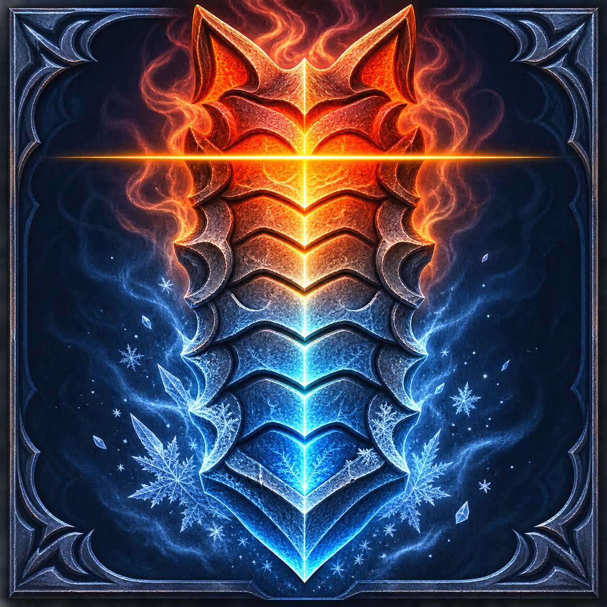
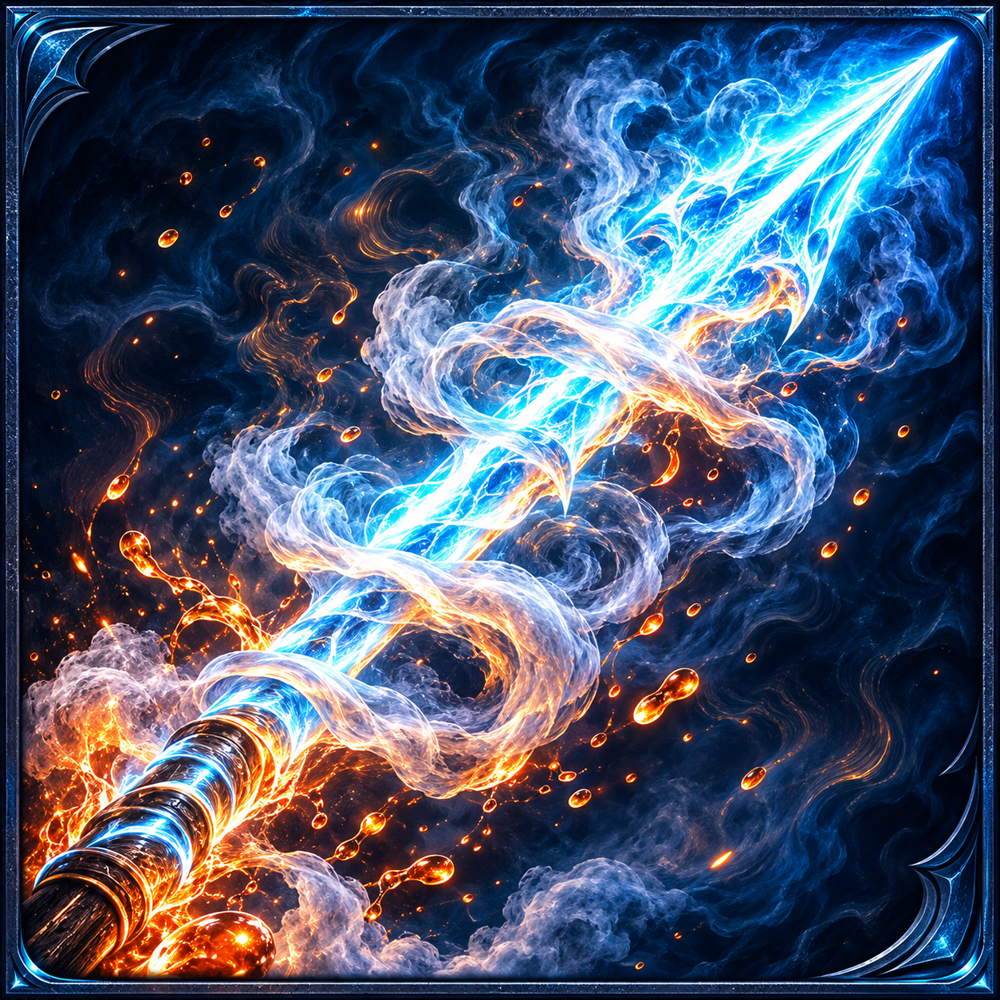
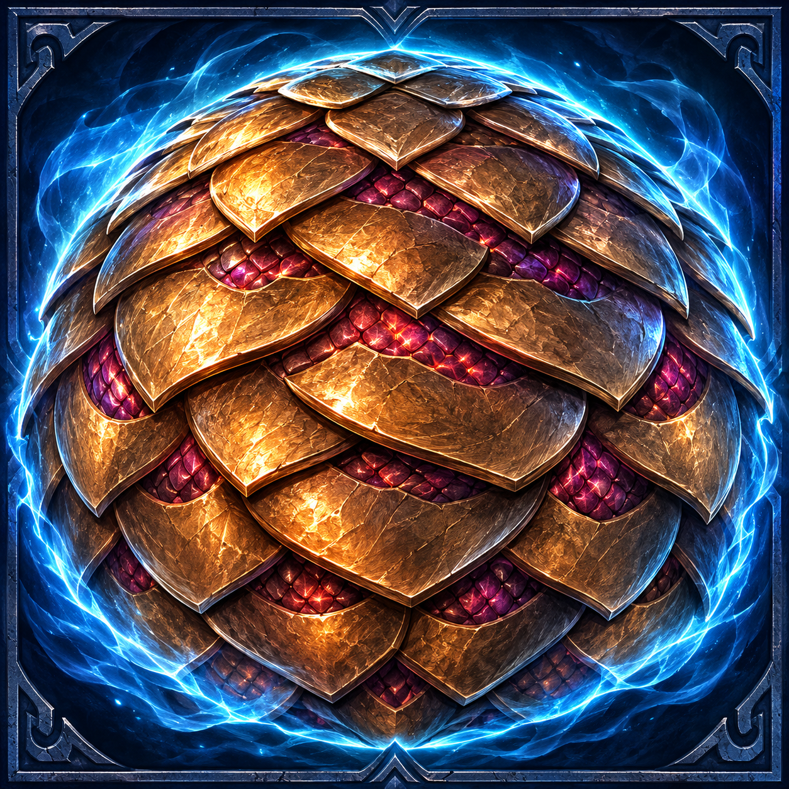
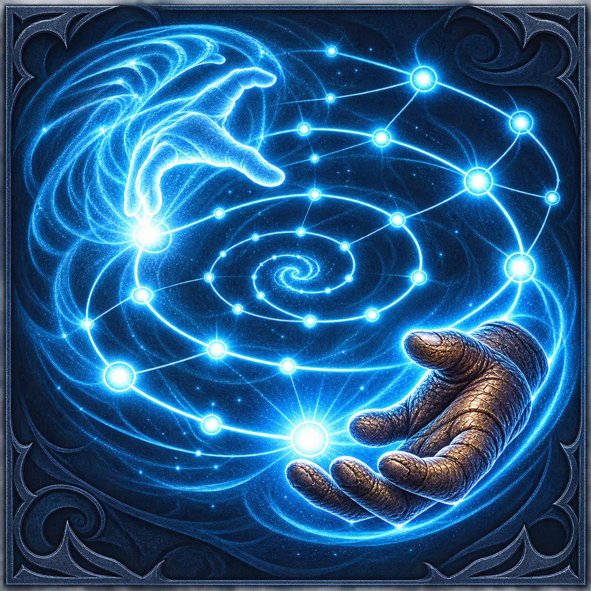
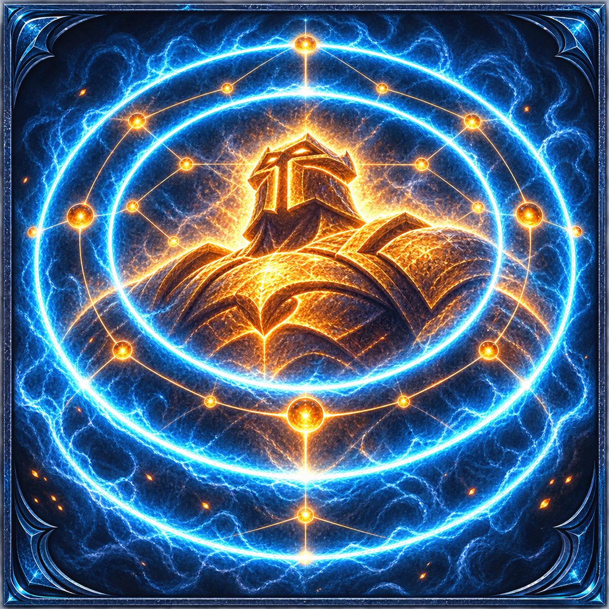

Universo conceptual ALBA
El Guardián
Térmico
3.6 m · 2010 kg · 128 actuadores · cola con inercia de 30 kg·m² — una cabeza de zorro sobre un coloso de placas doradas.
Modelo 3D de los 19 segmentos · capas piel / músculo / marco interno · sistemas térmico, circulatorio y estructural · Asistente ALBA contextual.

Herramienta anatómica digital
Anatomía 3D interactiva
Toda la arquitectura corporal de Kaelen con los datos reales del proyecto ALBA: actividades reposo / caminata / combate / sobrecarga, casos de estudio térmico (falla de base ≈71 °C, fallo de evaporación ≈40 °C, mejorado 37 °C) y el límite de diseño de 37.6 °C.
Demo en vivo
Funciona en escritorio y móvil, sin instalar nada. Requiere conexión (Three.js vía CDN).
Pruébala ahoraSin conexión (zip)
La misma herramienta, lista para abrir desde el disco con tu navegador.
Descargar zip · v1.2.0Simulador corporal
Descarga Kaelen · BodySim
Todas las apps del proyecto, construidas y firmadas automáticamente en cada release. Simulación térmica de 3 regiones, vista estructural y centros simbólicos.
Windows — instalador
Kaelen-BodySim-Setup-1.2.0.exeWindows — portable
Kaelen-BodySim-1.2.0-portable.exeAndroid — APK
Kaelen-BodySim-1.2.0.apkVersiones anteriores y notas en la página de Releases.
Character Pack 1.1.0
Kaelen como personaje de juego
Kit con contra-juego claro — sin CC duro, kiteable, ventanas de debilidad — e datos importables para League of Legends, Mobile Legends y Cyberpunk 2077, con importadores de Unity y Godot 4.

Pasiva — Equilibrio Térmico
El límite de 37.6 °C hecho regla: a 100 de calor, venteo forzado.

Q — Lanza Térmica
La Voz: proyectar hacia fuera el calor que no puede retener.

W — Placas de Escama
La Raíz: anclaje estructural — el escudo crece estando quieto.

E — Eco Topológico
La Mirada interna: memoria topológica emergente de ALBA.

R — Guardián de Coherencia
El Núcleo: proteger coherencia exige presencia.